1. Identifier
- Task: 2026-11-27-email-sending-module (app/email sending module, rollout stages 1+2)
- Task path: C:\Users\karas\Desktop\swaptime\group-thing-app\.maister\tasks\development\2026-11-27-email-sending-module
- Spec: C:\Users\karas\Desktop\swaptime\group-thing-app\.maister\tasks\development\2026-11-27-email-sending-module\implementation\spec.md
- Date: 2026-11-28
- Git ref: 3bb3591 (main, with the uncommitted e-mail module working tree)
- Tester: e2e-test-verifier (maister)
2. Test Environment
| Field | Value |
|---|---|
| Base URL | http://localhost:5174 (nginx → Next web + FastAPI backend), Mailpit http://localhost:8025 |
| Browser | Chromium via Playwright MCP |
| Viewport | 508×845 (mobile-width panel layout); stubbed-state shots at 635×1059 |
| Auth context | anonymous; account A (verified during the run); account B (unverified) |
| Test data | live local DB; fresh accounts and one fresh GIFT item ("E2E test kubek mailowy", place Kęty) |
3. Executive Summary
Verdict: ⚠️ GO WITH CAVEATS
| Metric | Count |
|---|---|
| Scenarios planned | 14 |
| Scenarios executed | 14 |
| Passed | 14 |
| Failed | 0 |
| Blocked | 0 |
| Pass rate | 100% |
| Critical issues | 0 |
| Major issues | 0 |
| Minor issues | 1 |
| Cosmetic issues | 2 |
All F1–F8 surfaces behave as the spec describes, with the specified Polish copy, and the backend rules hold at runtime. TRANSACTIONAL mail goes out during quiet hours. NOTIFICATION mail waits until 07:00 and is then sent within a minute. A newer verification token makes the older one return 410. The reset request answers a neutral 202 and sends no mail for an unknown address. A used reset or verification link shows the expired/invalid state. The unsubscribe GET is free of side effects and answers 303, and an opt-out made from the mail turns the next bell into SKIPPED/category_disabled. The main finding is the dev-only List-Unsubscribe encoding on the SMTP sender. The other two findings are visual.
4. Verification Scenarios
4.1 Registration → verification mail → confirm — ✅ Passed
- User story / acceptance criterion: User story 1; F7; backend account flows (verify token 48 h, single use, reissue marks earlier used — M-3)
- Preconditions: anonymous; fresh address e2e+20261128a@example.test
| # | Action | Expected | Actual | Status |
|---|---|---|---|---|
| 1 | Register at /login?mode=register | Account created, Home shown | Redirect to /, „Witaj, E2E+20261128A” | ✅ |
| 2 | Wait for Mailpit | „Potwierdź swój adres e-mail” mail, no List-Unsubscribe | Arrived after 54 s from „Gooo <no-reply@gooo.local>”, CTA + plain link, footer „Wiadomość o Twoim koncie…”, no List-* headers | ✅ |
| 3 | Re-send from the banner, then open the FIRST link | Earlier token marked used → invalid | „Link nieważny” (lookup 410) | ✅ |
| 4 | Open the newest link | Confirm screen, no side effect on GET | „Potwierdź adres / Kliknij, żeby potwierdzić e2e+…” + button; meta referrer=no-referrer | ✅ |
| 5 | Click „Potwierdź adres” | Success | „Adres potwierdzony” + neutral M-7 copy + „Ustawienia powiadomień” → /settings | ✅ |
| 6 | Reload the same link | Used → invalid | „Link nieważny … został już użyty.” | ✅ |
- Issues observed: §5.4.1 (✅ icon order)
- Evidence:
screenshots/07-verify-email-superseded-invalid-loggedin.png,screenshots/08-verify-email-confirm.png,screenshots/09-verify-email-success.png,screenshots/10-verify-email-reused-invalid.png,screenshots/21-mail-verify-email-html-redacted.png - Acceptance criteria checklist:
- ☑ Registration queues a verification mail
- ☑ GET is lookup-only, POST only on click
- ☑ Single use; reissue invalidates the earlier token
- ☑
no-referrerpolicy on the page


4.2 Home verification banner — ✅ Passed
- User story / acceptance criterion: User story 2; F3
- Preconditions: account A logged in,
email_verified=false
| # | Action | Expected | Actual | Status |
|---|---|---|---|---|
| 1 | Open / | Banner under greeting, role=status, no ✕ | „Potwierdź swój adres e-mail” / neutral copy / „Wyślij link” in a status region | ✅ |
| 2 | Click „Wyślij link” | Sent state, resend aria-disabled | „Sprawdź skrzynkę / Wysłaliśmy link na e2e+…” + „Wyślij ponownie” (aria-disabled="true", not native disabled) | ✅ |
| 3 | After verifying, open / | Banner hidden | No banner | ✅ |
- Issues observed: None observed.
- Evidence:
screenshots/02-home-verify-banner-before.png,screenshots/03-home-verify-banner-sent.png,screenshots/11-home-banner-hidden-verified.png - Acceptance criteria checklist:
- ☑ Shown only when
email_verified === false - ☑ Before/after copy as specified
- ☑ Cooldown via
aria-disabled


4.3 Account section row → /settings — ✅ Passed
- User story / acceptance criterion: F4
- Preconditions: account A logged in
| # | Action | Expected | Actual | Status |
|---|---|---|---|---|
| 1 | Open /account | „Ustawienia” section with „Powiadomienia e-mail” above „Wyloguj się” | Present, href /settings | ✅ |
| 2 | Click the row | /settings opens | Settings view loaded | ✅ |
- Issues observed: None observed.
- Evidence:
screenshots/04-account-settings-row.png - Acceptance criteria checklist:
- ☑ Row present and linked

4.4 /settings unverified + resend — ✅ Passed
- User story / acceptance criterion: User story 2; F2 (unverified, sent states)
- Preconditions: account A unverified
| # | Action | Expected | Actual | Status |
|---|---|---|---|---|
| 1 | Open /settings | Badge Niepotwierdzony, text, „Wyślij link weryfikacyjny”, switches disabled | As expected; all three switches disabled | ✅ |
| 2 | Click „Wyślij link weryfikacyjny” | 202, role=status sent text, „Wyślij ponownie za N s” | POST 202; „Wysłaliśmy link na … (także spam).”; „Wyślij ponownie za 55 s” | ✅ |
| 3 | Check outbox | Second request within 60 s silently rate-limited | No extra mail (2 verify mails in total); API still 202 | ✅ |
- Issues observed: None observed.
- Evidence:
screenshots/05-settings-unverified.png,screenshots/06-settings-link-sent.png - Acceptance criteria checklist:
- ☑ Toggles disabled while unverified/sent
- ☑ Rate limit silent (no account or limit disclosure)


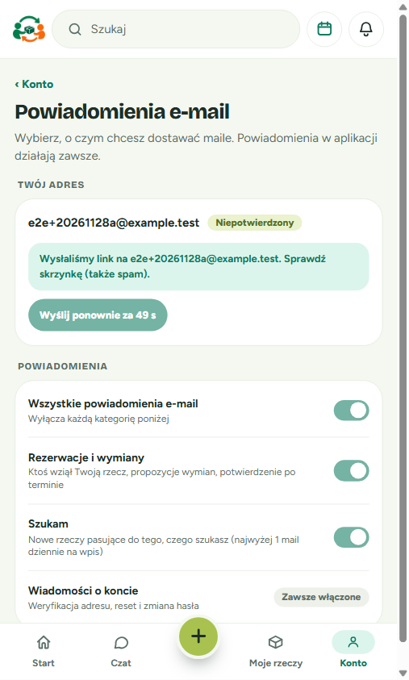
4.5 /settings preferences save and persist — ✅ Passed
- User story / acceptance criterion: User story 6; F2 switch behaviour
- Preconditions: account A verified
| # | Action | Expected | Actual | Status |
|---|---|---|---|---|
| 1 | Open /settings | Badge Potwierdzony, switches enabled | As expected; no „wkrótce” note (notifications_live=true) | ✅ |
| 2 | Turn „Szukam” off, reload | Persisted | Szukam aria-checked=false after reload | ✅ |
| 3 | Turn „Wszystkie” off, reload | Categories shown off and disabled | All false; both categories disabled | ✅ |
| 4 | Turn both back on, reload | API matches UI | all_enabled:true, RESERVATIONS/WANTS enabled | ✅ |
- Issues observed: None observed.
- Evidence:
screenshots/12-settings-verified.png,screenshots/13-settings-all-off-persisted.png - Acceptance criteria checklist:
- ☑ Optimistic save persisted server-side
- ☑ Category switches show
all_enabled && enabledand are disabled while ALL is off - ☑ Locked „Wiadomości o koncie — Zawsze włączone” info row


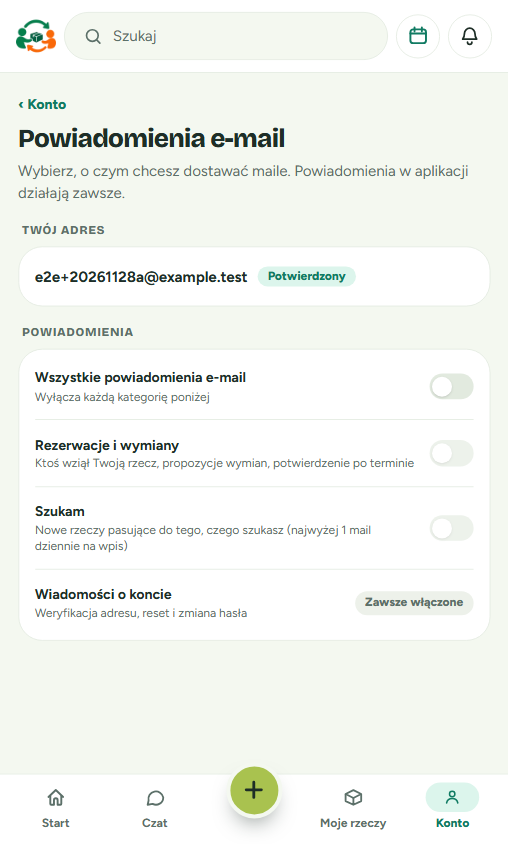
4.6 /settings failure and suppression states (stubbed responses) — ✅ Passed
- User story / acceptance criterion: F2 error / revert / complaint / bounce
- Preconditions: account A verified; single API response stubbed in the browser
| # | Action | Expected | Actual | Status |
|---|---|---|---|---|
| 1 | PUT preference → 500 | Switch reverts, alert under row | Reverted to on; „Nie udało się zapisać zmiany. Spróbuj ponownie.” | ✅ |
| 2 | GET preferences → 503 | Error alert + retry | „Nie udało się wczytać ustawień powiadomień.” + „Spróbuj ponownie”; retry loads 3 switches | ✅ |
| 3 | suppression: COMPLAINT | Wstrzymane, spam text with support address, toggles disabled | As expected | ✅ |
| 4 | suppression: BOUNCE | Wstrzymane, bounce text + resend button, toggles disabled | As expected | ✅ |
- Issues observed: None observed.
- Evidence:
screenshots/26-settings-toggle-save-failed.png,screenshots/27-settings-load-error.png,screenshots/29-settings-complaint-mocked.png,screenshots/29-settings-bounce-mocked.png - Acceptance criteria checklist:
- ☑ Revert +
role=alerton failure - ☑ Load error state with refetch
- ☑ COMPLAINT and BOUNCE address states

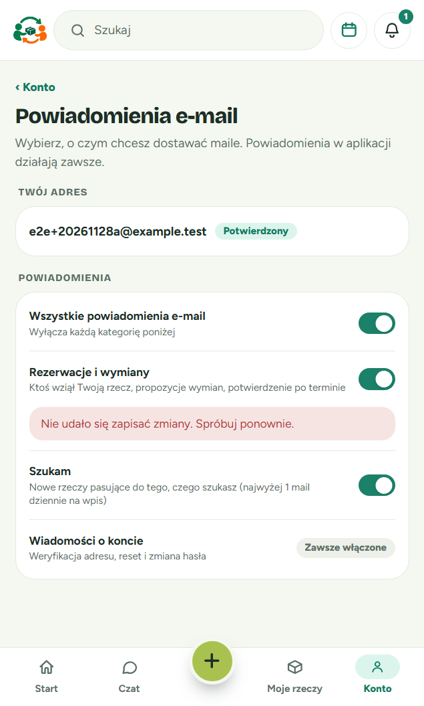

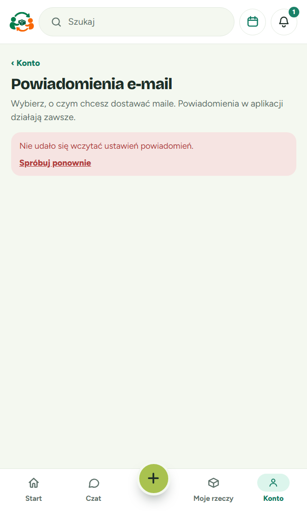

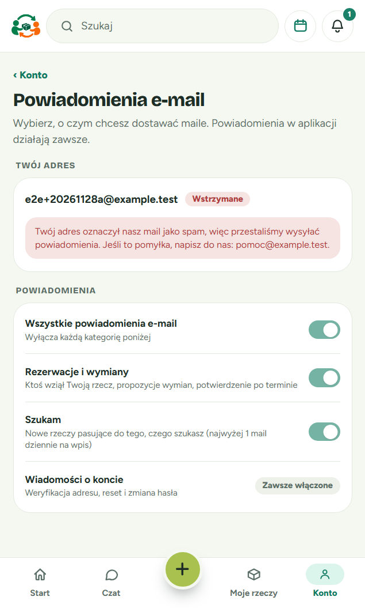

4.7 „Nie pamiętasz hasła?” link (page and AuthSheet) — ✅ Passed
- User story / acceptance criterion: F5
- Preconditions: anonymous
| # | Action | Expected | Actual | Status |
|---|---|---|---|---|
| 1 | Open /login | Link between password and submit | Present, href /reset-password | ✅ |
| 2 | Product page → „Napisz o przedmiocie” → AuthSheet → link | Navigates and closes the sheet | /reset-password loaded, 0 dialogs left | ✅ |
- Issues observed: None observed.
- Evidence:
screenshots/01-login-forgot-link.png,screenshots/25-authsheet-forgot-link.png - Acceptance criteria checklist:
- ☑ Link on page and in sheet
- ☑ Sheet closed on navigate-away

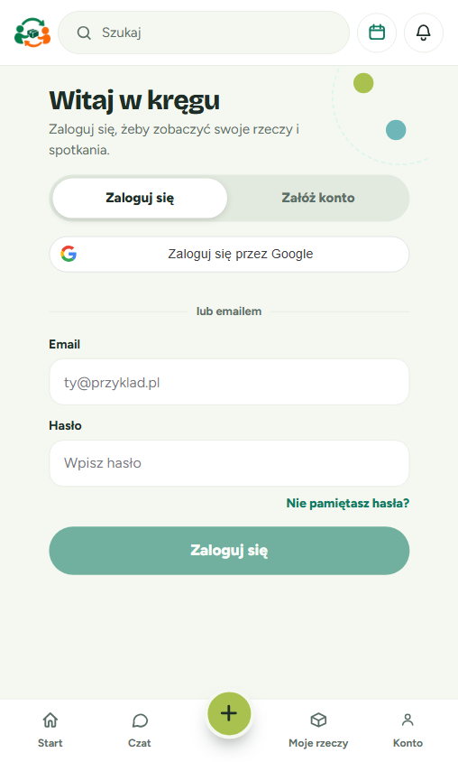

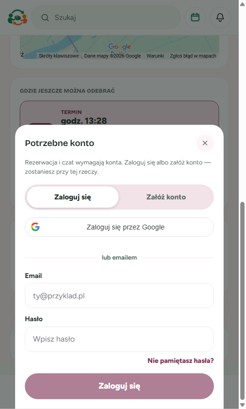
4.8 Reset request (neutral) — ✅ Passed
- User story / acceptance criterion: User story 3; F6 no-token; success criterion 5
- Preconditions: anonymous
| # | Action | Expected | Actual | Status |
|---|---|---|---|---|
| 1 | Submit an unknown address | 202, neutral copy, no mail | 202; „Jeśli konto z adresem … istnieje…”; no outbox row, no mail | ✅ |
| 2 | Submit account A | Same copy, reset mail | „Ustaw nowe hasło” mail after 9 s | ✅ |
| 3 | POST → 503 (stub) | 503 alert on the form | „Wysyłka maili jest chwilowo niedostępna. Spróbuj później.” | ✅ |
| 4 | Open /reset-password while logged in | No-token branch guarded | Redirected to / | ✅ |
- Issues observed: None observed.
- Evidence:
screenshots/14-reset-request-form.png,screenshots/15-reset-request-sent-neutral.png,screenshots/28-reset-request-503.png - Acceptance criteria checklist:
- ☑ Never reveals whether the account exists
- ☑ 503 copy

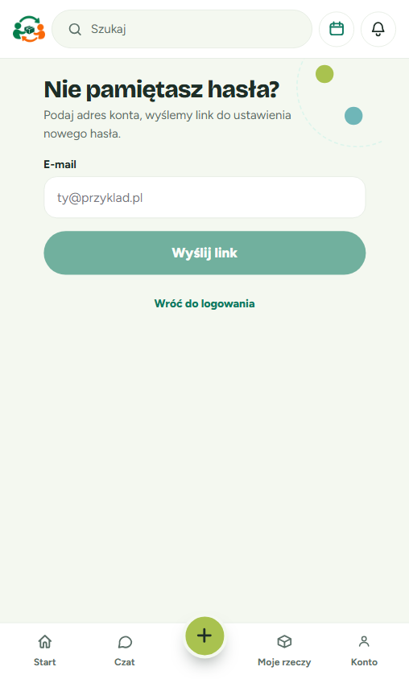


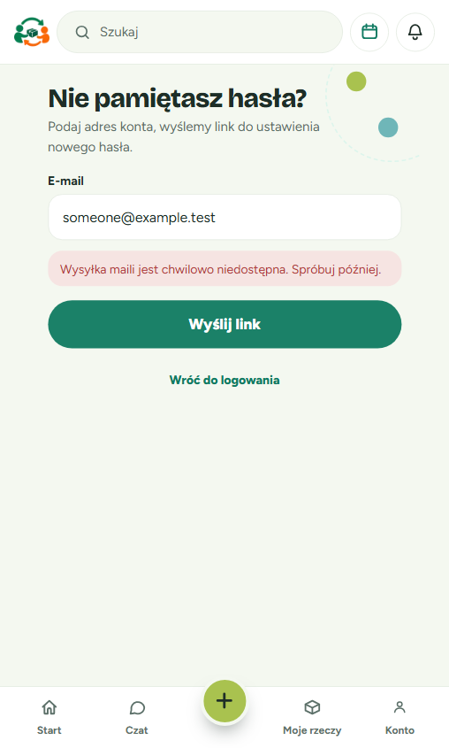
4.9 Reset with token → new password → login + "password changed" mail — ✅ Passed
- User story / acceptance criterion: User story 3; F6 token branch
- Preconditions: reset mail for account A
| # | Action | Expected | Actual | Status |
|---|---|---|---|---|
| 1 | Open link | „Ustaw nowe hasło / Dla konta <email>”, no-referrer | As expected | ✅ |
| 2 | Enter mismatching passwords | Inline alert, aria-invalid/aria-describedby, save aria-disabled, submit guarded | „Hasła nie są takie same.”; requestSubmit() sends no request | ✅ |
| 3 | Fix and save | Success screen | „Hasło zmienione …” + „Przejdź do logowania” | ✅ |
| 4 | Log in with old password | Rejected | Rejected (existing English message, see §8) | ✅ |
| 5 | Log in with new password | Logged in | Redirect to / | ✅ |
| 6 | Mailpit | „Hasło zostało zmienione” mail | Received; Warsaw time in text, link to /reset-password | ✅ |
- Issues observed: None observed.
- Evidence:
screenshots/16-reset-new-mismatch.png,screenshots/17-reset-success.png,screenshots/20-mail-password-changed-html.png,screenshots/19-mailpit-transactional-mails.png - Acceptance criteria checklist:
- ☑ Password changed and old one rejected
- ☑ Confirmation mail sent (TRANSACTIONAL, during quiet hours)


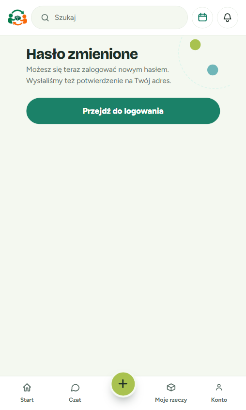


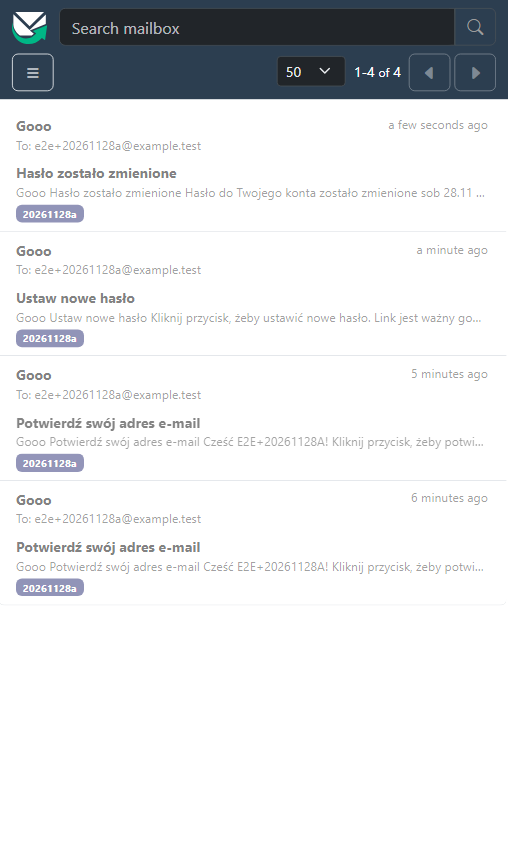
4.10 Single-use / invalid token states (logged in and guest) — ✅ Passed
- User story / acceptance criterion: F6 invalid, F7 invalid
- Preconditions: used and garbage tokens
| # | Action | Expected | Actual | Status |
|---|---|---|---|---|
| 1 | Reopen the used reset link | „Link wygasł” + „Wyślij nowy link” | As expected (lookup 410) | ✅ |
| 2 | Garbage reset token (guest) | Same | As expected | ✅ |
| 3 | Garbage verify token (logged in) | „Link nieważny” + button | As expected | ✅ |
| 4 | Garbage / missing verify token (guest) | „Zaloguj się, żeby wysłać nowy.” → /login?returnTo=/settings | As expected | ✅ |
- Issues observed: None observed.
- Evidence:
screenshots/18-reset-reused-expired.png,screenshots/24-verify-email-invalid-guest.png,screenshots/10-verify-email-reused-invalid.png - Acceptance criteria checklist:
- ☑ Used/expired/unknown tokens show the invalid state
- ☑ Guest vs logged-in variants


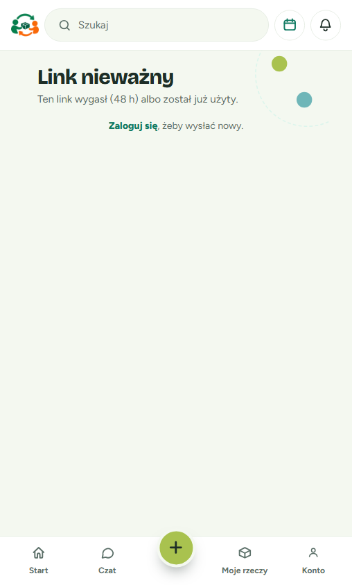
4.11 Bell mail (TERM_ITEM_LISTING_TAKEN) and quiet hours — ✅ Passed
- User story / acceptance criterion: User story 4; success criteria 1–3
- Preconditions: A verified and owns a GIFT item; B takes it (personal pickup) at 06:11 Warsaw
| # | Action | Expected | Actual | Status |
|---|---|---|---|---|
| 1 | B clicks „Odbiorę osobiście” → „Rezerwuję” | Bell for A + NOTIFICATION outbox row | POST take 200; row RESERVATIONS / TERM_ITEM_LISTING_TAKEN / PENDING | ✅ |
| 2 | Before 07:00 Warsaw | Held (quiet hours); TRANSACTIONAL rows still sent | Stayed PENDING; verify/reset/changed mails sent at 06:02–06:11 | ✅ |
| 3 | 07:00:35 Warsaw run | Sent | SENT at 06:00:35 UTC, attempts 1; „Ktoś wziął Twoją rzecz” in Mailpit | ✅ |
| 4 | Inspect mail | Message, CTA to the item, category footer, List-Unsubscribe + Post | All present; „Zobacz szczegóły” → item URL; footer links | ✅ |
- Issues observed: §5.3.1 (header encoding, found in this mail)
- Evidence:
screenshots/30-mail-bell-notification-html.png - Acceptance criteria checklist:
- ☑ Bell and queue row written together
- ☑ Quiet hours hold NOTIFICATION, never TRANSACTIONAL
- ☑ Sent within 1 min after quiet hours end
- ☑ Unverified recipient (B) got no notification mail

4.12 Unsubscribe from the bell mail — ⚠️ Passed with issues
- User story / acceptance criterion: User story 6; F8; success criterion 3
- Preconditions: the bell mail from 4.11
| # | Action | Expected | Actual | Status |
|---|---|---|---|---|
| 1 | GET the List-Unsubscribe URL | 303 to /unsubscribe?token=…, no change | Redirected; preferences unchanged (RESERVATIONS still on) | ✅ |
| 2 | Choice screen | Category label, two buttons, account-mail note, no-referrer | As expected | ✅ |
| 3 | „Wyłącz tę kategorię” | „Gotowe” + category copy + settings link | As expected | ✅ |
| 4 | Open /settings | Rezerwacje off, others on | RESERVATIONS false, ALL true, WANTS true | ✅ |
| 5 | RFC 8058 POST List-Unsubscribe=One-Click | 200, idempotent | 200 | ✅ |
| 6 | B takes the item again | Row SKIPPED category_disabled, no mail | SKIPPED/category_disabled; Mailpit count unchanged | ✅ |
| 7 | Raw List-Unsubscribe header | <http://…/api/email/unsubscribe/…> | RFC 2047 encoded-word, folded | ❌ |
- Issues observed: §5.3.1, §5.4.1 (👋 icon order)
- Evidence:
screenshots/31-unsubscribe-choice.png,screenshots/32-unsubscribe-done.png,screenshots/33-settings-after-unsubscribe.png - Acceptance criteria checklist:
- ☑ GET is free of side effects (303)
- ☑ Opt-out takes effect on the next run
- ☐ List-Unsubscribe header readable by mail clients (SMTP path)


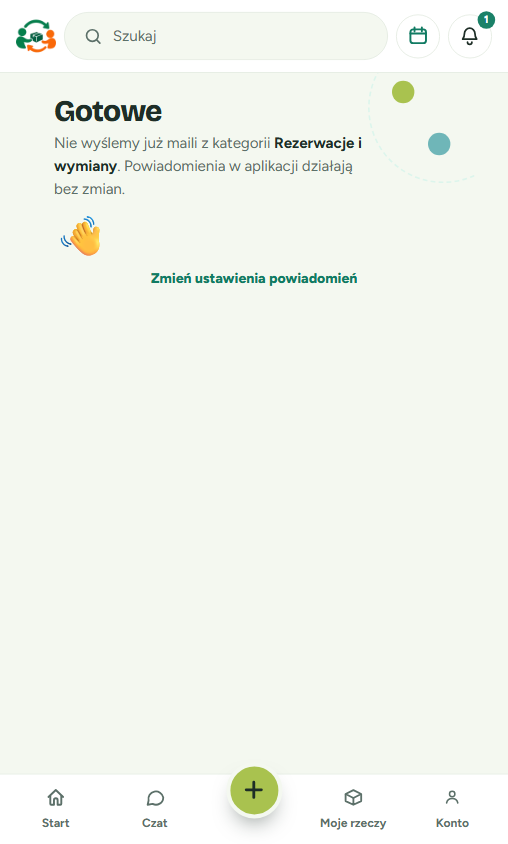

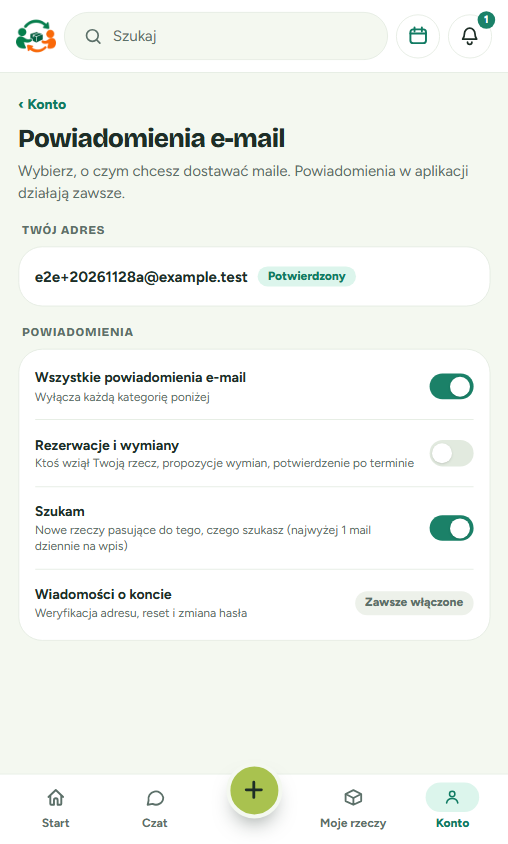
4.13 Unsubscribe invalid / forged link — ✅ Passed
- User story / acceptance criterion: F8 invalid
- Preconditions: logged in as A
| # | Action | Expected | Actual | Status |
|---|---|---|---|---|
| 1 | /unsubscribe?token=garbage | „Nieprawidłowy link” | As expected | ✅ |
| 2 | Well-formed token with a forged signature → „Wyłącz tę kategorię” | POST 404 → invalid | POST 404; „Nieprawidłowy link” | ✅ |
| 3 | GET /api/email/unsubscribe/<forged> | 303 to the page, side effect free | 303 | ✅ |
- Issues observed: None observed.
- Evidence:
screenshots/22-unsubscribe-invalid.png,screenshots/23-unsubscribe-forged-post-404.png - Acceptance criteria checklist:
- ☑ Signature checked only by the server


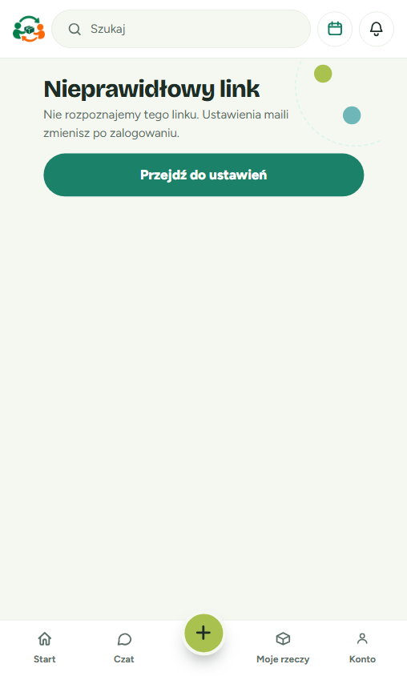
4.14 Route guarding — ✅ Passed
- User story / acceptance criterion: F2 (
/settingsprotected), F6 (M-9), F9 - Preconditions: anonymous / logged in
| # | Action | Expected | Actual | Status |
|---|---|---|---|---|
| 1 | Guest opens /settings | Login gate | /login?returnTo=%2Fsettings | ✅ |
| 2 | Logged-in user opens /reset-password (no token) | Redirect away | Redirected to / | ✅ |
| 3 | Guest opens /verify-email, /unsubscribe, /reset-password?token= | Public | All render without login | ✅ |
- Issues observed: None observed.
- Evidence:
screenshots/24-verify-email-invalid-guest.png - Acceptance criteria checklist:
- ☑
/settingsprotected; the three token pages public
5. Discrepancies
5.1 Critical
None observed.
5.2 Major
None observed.
warning5.3 Minor
5.3.1 List-Unsubscribe header is RFC 2047-encoded on the SMTP sender
- Spec requirement: notification mails carry
List-Unsubscribe: <…/api/email/unsubscribe/{token}>andList-Unsubscribe-Post: List-Unsubscribe=One-Click(RFC 8058); mockupscreen:emails. - Expected: raw header
List-Unsubscribe: <http://localhost:5174/api/email/unsubscribe/1.RESERVATIONS.…>. - Actual: raw header
List-Unsubscribe: =?utf-8?q?=3Chttp=3A//localhost=3A5174/api/email/unsubscri?= =?utf-8?q?be/1=2ERESERVATIONS=2E…?=folded over 3 lines. It decodes to the right URL, but RFC 2369/8058 values are not encoded-words, so clients and Mailpit's checks cannot use it.List-Unsubscribe-Postis correct. - Evidence: Mailpit raw source of message „Ktoś wziął Twoją rzecz” (
/api/v1/message/{id}/raw);screenshots/30-mail-bell-notification-html.png - Root cause hypothesis:
src/backend/app/email/senders.pySmtpSender.sendassignsmime[name] = valueon anEmailMessage()with the default policy (max_line_length=78). The value is a single token longer than 78 characters with no whitespace, so the policy folds it as encoded-words.MailgunSenderpasses headers ash:List-Unsubscribeform fields and Mailgun builds the MIME itself, so production is probably unaffected (not verified here). - User impact: on the local/Mailpit path no client shows a one-click unsubscribe. Production impact is only possible if
SmtpSenderwere ever used against a real provider. The in-body „Wypisz się z tej kategorii” link works. - Recommended fix: build the SMTP message with a policy that does not fold long headers, e.g.
EmailMessage(policy=email.policy.SMTP.clone(max_line_length=998))(ormax_line_length=None). Add a sender test asserting that the raw bytes containList-Unsubscribe: <http. Check the first Mailgun staging send. - Workaround: use the in-body unsubscribe link or
/settings.
info5.4 Cosmetic
5.4.1 Emoji below the text on /verify-email success and /unsubscribe done
- Spec requirement: mockups
screen:verify-email(✅ above „Adres potwierdzony”) andscreen:unsubscribe(👋 above „Gotowe”). - Expected: icon above the heading.
- Actual: icon rendered after the subtitle, between the text and the button (
VerifyEmailPage.tsxpasses it as a child ofAuthLayout, which renders children after title + subtitle). - Evidence:
screenshots/09-verify-email-success.png,screenshots/32-unsubscribe-done.png,screenshots/mock-potwierdzenie-adresu-verify-email.png - Root cause hypothesis:
AuthLayouthas no icon slot above the title. - User impact: visual hierarchy only.
- Recommended fix: add an optional
iconprop toAuthLayoutrendered before theh1, or accept the deviation. - Workaround: none needed.
5.4.2 Login error message in English (pre-existing, outside this task)
- Spec requirement: none in this spec. The project's UI copy is Polish.
- Expected: Polish error for a wrong password.
- Actual:
role=alert„Invalid username or password” after the old password was rejected in 4.9. - Evidence: observed in the accessibility snapshot during scenario 4.9 (no screenshot)
- Root cause hypothesis: existing backend 401 envelope shown verbatim by
LoginForm. - User impact: inconsistent language on a failed login.
- Recommended fix: map the 401 to Polish copy in a separate task.
- Workaround: none needed.

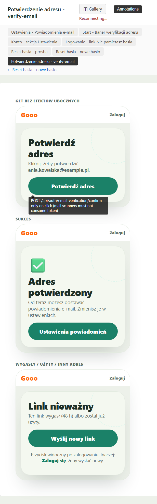
6. Console & Network Errors
| Source (file:line) | Message | Frequency | Severity | Impact |
|---|---|---|---|---|
GET /api/organizations/mine | 404 Not Found | every panel page for accounts without an organization | Cosmetic | Existing expected 404, no UI effect |
accounts.google.com/gsi/button | 403, „The given origin is not allowed for the given client ID” | every page with the Google button | Cosmetic | Google sign-in not configured for this origin (out of scope) |
POST /api/auth/account-tokens/lookup | 410 Gone | each used/expired/garbage token page | — | Expected; drives the invalid state |
POST /api/email/unsubscribe/<forged> | 404 Not Found | once (forged-signature test) | — | Expected; drives the invalid state |
GET /api/public/organizations/register | 404 | once | — | Tester navigated to /register (not a route); not an app defect |
No uncaught JavaScript errors or React warnings were seen on any e-mail module page.
7. Spec Alignment
- Fully implemented:
- F1 API/hooks (observed via network: preferences GET/PUT, email-verification 202, password-reset 202, account-tokens lookup, confirm, unsubscribe POST)
- F2
/settings(all address states incl. derived bounce, switches, revert, load error) - F3 Home banner
- F4 Account row
- F5 login link incl. AuthSheet close
- F6
/reset-password(form, sent, 503, token form, mismatch, invalid, success, guarding per M-9,no-referrer) - F7
/verify-email(confirm on click only, success, invalid guest/logged-in,no-referrer) - F8
/unsubscribe(choice, done, invalid, GET 303, one-click POST) - Backend: outbox, quiet hours, TRANSACTIONAL bypass, late preference binding (
category_disabled), verify/reset/changed templates, token reissue, rate limit, neutral reset - Partially implemented:
- Notification mail headers:
List-Unsubscribeencoded on the SMTP sender (§5.3.1) - Not implemented:
- None. (Not exercised: the Mailgun webhook, the daily cap,
WANT_MATCH_FOUNDdaily mail, the scope-all unsubscribe copy, and thenotifications_live=falsenote; see §8.) - Extra (unspecified) behavior:
- Mails print the plain URL under the CTA button as a fallback.
- An already-verified, logged-in user opening a used verify link sees „Wyślij nowy link” (the spec says logged-in users see it and does not distinguish verified ones).
8. Variances from Plan
- COMPLAINT/BOUNCE suppression, a 503 reset request, a failed PUT and a failed preferences GET were reached by stubbing the single API response in the browser (no config change, no DB writes).
- The bell mail used
TERM_ITEM_LISTING_TAKEN(personal pickup). Other mailed kinds (SWAP_*, TERM_CONFIRMATION_NEEDED, RESERVATION_CANCELLED via event deletion, WANT_MATCH_FOUND) were not triggered. - Not exercised: the Mailgun sender and HMAC webhook (local stack uses SMTP → Mailpit), the daily cap, the
notifications_live=falsenote, the 48 h / 1 h natural expiry (used tokens were tested instead), and Google sign-in (not configured locally). - The test item "E2E test kubek mailowy" (owner account A) and B's active reservation on it remain in the local DB.
9. Evaluation Against Exit Criteria
| Criterion (from spec) | Status | Evidence |
|---|---|---|
| 1. A bell and its queue row commit atomically… | ✅ | Take → bell + PENDING row in the same request (4.11) |
| 2. Outside quiet hours a mail reaches the provider within 2 minutes… TRANSACTIONAL never delayed by quiet hours | ✅ | Transactional sent 9–54 s after the request at 06:0x Warsaw; notification sent at 07:00:35 (4.8, 4.11) |
| 3. No NOTIFICATION mail to unverified, suppressed, opted-out… unsubscribe effective by next run | ✅ | B (unverified) received none; post-unsubscribe take → SKIPPED/category_disabled (4.12) |
4. No log line, last_error or report contains an address, token or mail content | ✅ | Outbox rows hold no address in the columns read; logs not inspected; this report redacts tokens |
| 5. Forgot-password always answers 202 without revealing the account… | ✅ | Unknown and known address both 202 with identical copy (4.8) |
| 6. Webhook events idempotent… BOUNCE/COMPLAINT stop NOTIFICATION mail | ❌ | Not exercisable locally (no Mailgun webhook); UI states verified with stubs only |
| 7. All 11 design-context IDs implemented with mockup copy, field order and states… | ✅ | verification/visual-fidelity.md: 9 match, 2 minor, 0 drift |
| 8. Migrations 0110–0112 downgrade-then-upgrade tests… | ❌ | Out of scope for browser verification (covered by the test suite phase) |
10. Recommendations
- Must fix before merge: None.
- Should fix soon: §5.3.1 (SMTP
List-Unsubscribefolding + a raw-header test; check the first Mailgun staging send) - Nice-to-have: §5.4.1 (icon slot in
AuthLayout), §5.4.2 (Polish login error, separate task)
11. Artifacts
- Screenshots:
verification/screenshots/(43 files: 34 implementation, 9 rendered mockupsmock-*.png) - Visual-fidelity report:
verification/visual-fidelity.md(+visual-fidelity.html) - Console log dump: inline in §6
12. Conclusion
The verdict is ⚠️ GO WITH CAVEATS. Every user-facing flow of the e-mail module works end to end against the running stack with real mail, and the key backend rules hold at runtime: quiet hours, the TRANSACTIONAL bypass, single-use tokens, neutral reset and late opt-out binding. The one functional finding, the encoded List-Unsubscribe header, affects only the dev SMTP sender and the in-body unsubscribe link still works. Recommendation: merge, then fix §5.3.1 in a follow-up and confirm the header on the first Mailgun staging send.